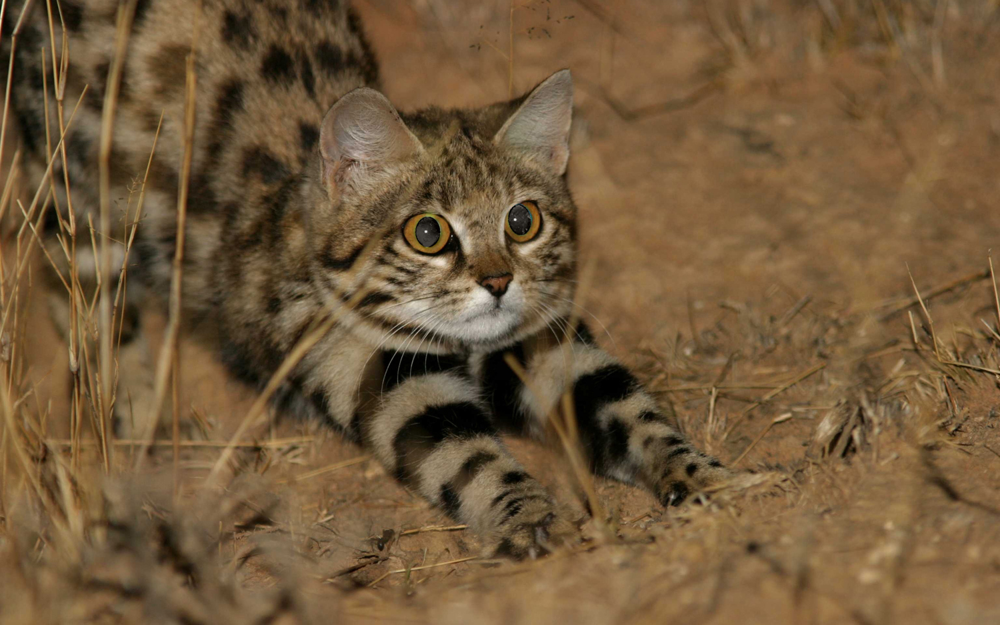
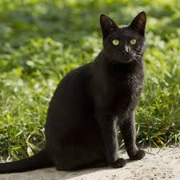
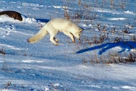

<!DOCTYPE html>
<html lang="en"></html>

<head> 

    <meta charset="UTF-8">
    <meta name="viewport" content="width=device-width, initial-scale=1.0">
    <title> My Favorite Animals </title>
    <link rel="stylesheet" href="style.css">
</head>

<body> 

    <h1> My Favorite Animals </h1>
        <h2> These are my favorite animals! </h2>
            <ul>
                <li>Bats</li>
                <li>Cats</li>
                <li>Foxes</li>
            </ul>
                <br>
        <table>
            <tr>
                <th>Bats</th>
                <th>Cats</th>
                <th>Foxes</th>
            </tr>

            <tr>
                <td>Marshmallow Bats</td>
                <td>Tortoishell Cats</td>
                <td>Arctic Foxes</td>
            </tr>
            
            <tr>
                <td>Fruit Bats</td>
                <td>Black-Footed Cats</td>
                <td>Fennec Foxes</td>
            </tr>

            <tr>
                <td>Microbats</td>
                <td>Black Cats</td>
                <td>Red Foxes</td>
            </tr>

        </table>
        
        <h2><strong> Bats: </strong></h2>
            <h3>Here are some types of bats</h3>
            <p><strong>Honduran White Bats/ Marshallow Bats (Ectophylla alba): </strong> </p>
                <p> These bats don't rely on echolocation as much as other bats, instead they use their touch and vision</p>
                
            <br><br>
            <p><strong>Megachiroptera/ Fruit Bats (Pteropodidae)</strong></p>
                <p>Sometimes, these bats can get so big that their wingspan can reach up to 5.6 feet or more</p>
                
            <br><br>
            <p><strong>Microbat (Microchiroptera)</strong></p>
                <p>There are about 900 different species of these bats</p>
                
                <a href="https://www.doi.gov/blog/13-facts-about-bats"> target="_blank" Learn more about bats!></a>
            <br><br>
            
        <h2><strong>Cats: </strong></h2>
            <h3>Here are some types of cats</h3>
                <p><strong>Tortoiseshell Cats</strong></p>
                    <p>Almost all of these cats are female and if they are male, they are sterile because of genetics in their fur color</p>
                    
                    <br>
                <p><strong>Black-footed Cats</strong></p>
                    <p>Don't be fooled with it's adorable appearance, these are the deadliest cats with a hunting success rate of 60%</p>
                    
                    <br>
                <p><strong>Black Cats</strong></p>
                    <p>Black cats actually aren't one specific breed, rather multiple breeds which happen to have black fur, most commonly the bombay cat which actually has dark brown fur</p>
                    
            <br><br><br><br>
        
        <h2>Foxes:</h2>
            <h3>Here are some foxes</h3>
                <p><strong>Arctic Foxes</strong></p>
                    <p>Arctic Foxes' fur adapted to keep them warm in temperatures reaching -70 degrees</p>
                    
                    <br>
                <p><strong>Fennec Foxes</strong></p>
                    <p>Fennec Foxes are the world's smallest foxes and are known for their large ears</p>
                    
                    <br>
                <p><strong>Red Foxes</strong></p>
                    <p>Red Foxes can have different colors of fur but they will always have a white-tipped tail</p>
                    
                    <br><br>
                    
                    
        
</body>
